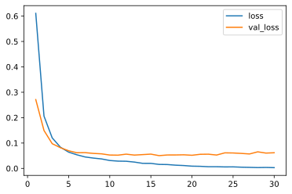

Keras4Torch
"An Easy-to-Use Wrapper for Training PyTorch Models❤"
Keras4Torch provides an easy way to train PyTorch models in Keras style. You can use keras4torch.Model to warp any torch.nn.Module to integrate core training features. Once the model is wrapped, the training process can be done with only a few lines of code.
-
If you are a keras user, most of your training code can work well in Keras4Torch with little change.
-
If you are a pytorch user, Keras4Torch can help you train pytorch models with far less code than basic pytorch.
Installation
pip install keras4torch
Keras4Torch supports PyTorch 1.6 or newer.
Quick Start
Let's start with a simple example of MNIST!
import torch
import torchvision
from torch import nn
import keras4torch
Step1: Preprocess Data
mnist = torchvision.datasets.MNIST(root='./', download=True)
X, y = mnist.train_data, mnist.train_labels
X = X.float() / 255.0 # scale the pixels to [0, 1]
x_train, y_train = X[:40000], y[:40000]
x_test, y_test = X[40000:], y[40000:]
Step2: Define the Model
model = torch.nn.Sequential(
nn.Flatten(),
nn.Linear(28*28, 512), nn.ReLU(),
nn.Linear(512, 128), nn.ReLU(),
nn.Linear(128, 10)
)
model = keras4torch.Model(model) # attention this line
Step3: Config Optimizer, Loss and Metric
model.compile(optimizer='adam', loss=nn.CrossEntropyLoss(), metrics=['acc'])
Step4: Training
history = model.fit(x_train, y_train,
epochs=30,
batch_size=512,
validation_split=0.2,
)
Train on 32000 samples, validate on 8000 samples:
Epoch 1/30 - 0.7s - loss: 0.7440 - acc: 0.8149 - val_loss: 0.3069 - val_acc: 0.9114 - lr: 1e-03
Epoch 2/30 - 0.5s - loss: 0.2650 - acc: 0.9241 - val_loss: 0.2378 - val_acc: 0.9331 - lr: 1e-03
Epoch 3/30 - 0.5s - loss: 0.1946 - acc: 0.9435 - val_loss: 0.1940 - val_acc: 0.9431 - lr: 1e-03
Epoch 4/30 - 0.5s - loss: 0.1513 - acc: 0.9555 - val_loss: 0.1663 - val_acc: 0.9524 - lr: 1e-03
... ...
Step5: Plot Learning Curve
history.plot(kind='line', y=['acc', 'val_acc'])

Step6: Evaluate on Test Set
model.evaluate(x_test, y_test)
{'loss': 0.121063925, 'acc': 0.9736}
Communication
If you have any problem when using Keras4Torch, please:
- open a Github Issue
- send email to blueloveTH@foxmail.com or zhangzhipengcs@foxmail.com.
Keras4Torch is still under development.
Any contribution to us would be more than welcome : )
You can contribute new features by opening a Pull Request. (The details will be updated soon)